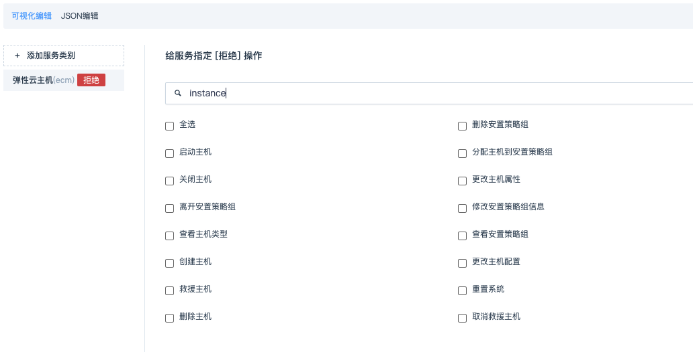
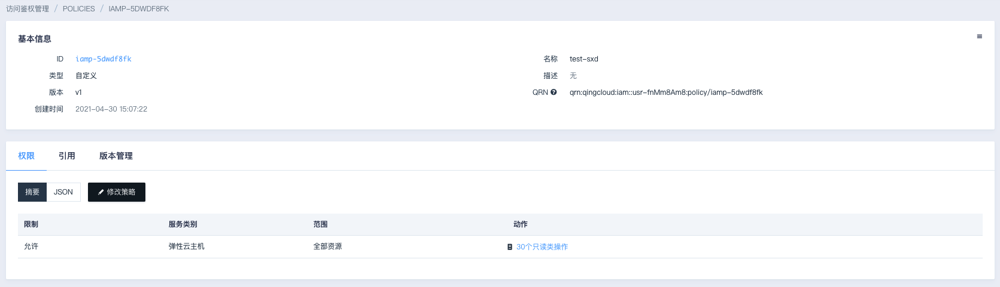
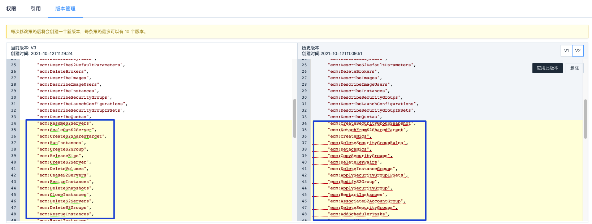

策略管理
您可以通过 IAM 策略定义一系列服务或资源的访问权限范围，然后将其引用到指定的身份上。当 IAM 身份附加了某条策略，则代表该身份具备此策略所定义的权限，并将会在身份使用时根据权限定义启动策略评估。
说明
策略评估时多条策略叠加取并集，并默认拒绝未定义任何权限的操作；
若叠加的策略中针对同一操作定义了不同结论，则拒绝优先。
当您对策略叠加的预期评估结论产生疑问时，您可以使用策略模拟器获得准确的测试结论。
策略类型
策略分为预置策略、自定义策略和应用托管托管策略。您可以点击策略列表类型列的下拉选择筛选定位到相应的策略类型。
说明
预置策略是云平台为满足您的日常管理需要而提供，无法删除和更改；
应用托管策略是由 AppCenter 应用开发者定义，您在部署相应应用时即自动生成，也是无法自主删除和更改的。
只有自定义策略支持删除和更改。
创建自定义策略
控制台为自定义策略提供了可视化创建和JSON编辑两种创建方式。当您点击“创建”按钮后，将默认引导可视化策略创建。
可视化创建
-
点击 添加服务类别，选择需要加入策略的服务。

例如：“弹性云服务器”，页面将按只读、维护和敏感分类列出该服务下的所有操作。您也可以点击 显示操作名称 切换到 显示 API 指令 的方式查看这些操作明细。
-
展开操作分类后，勾选需要加入到策略的操作即可为这些操作设置“允许”权限。
如果需要为被勾选的操作赋予拒绝权限，则点击“切换以拒绝权限”按钮：
您可以在勾选操作前通过操作名称或 API 关键字搜索操作，页面将实时展示符合条件的操作列表。如下图所示：

-
选择操作后，页面将指引您为选择的操作设定权限作用范围，默认是作用于“全部资源”，如需将权限范围圈定到部分特定资源上，点选“特定资源”按钮并配置资源标识符 QRN 即可。IAM 会根据您所选的操作自动关联出操作所需的所有资源，如下图：
说明
当选择“特定资源”作为权限范围时，您必须为必选（前面标有*的资源）类型指定 QRN，上图的“云服务器”即为必选类型。您可以使用 QRN 生成器 来指定相应的资源。
-
由于策略可以是多个相同或不同服务类别的不同权限集合，您可通过再次点击“添加服务类别”按钮并循环前面的操作以将一系列不同的权限集合在一起。
-
确认内容创建无误后可以点击“下一步”按钮以进入策略审阅界面。填写自定义策略的名称和描述后点击“创建”即可创建成功。
-
创建成功后，页面出现提示弹框，可根据指引点击进入策略模拟器或者策略详情页。
JSON 编辑
策略是由 JSON 格式创建的配置文件：策略 JSON 编辑格式及参数说明。
如果您对策略有更灵活的要求，则可以在策略创建过程中随时点击“JSON 编辑”按钮切换到配置文件编辑模式。如下图所示：
切换到配置文件编辑模式后，系统会自动将已可视化编辑的配置实时显示其中，您可以直接在该基础上编辑：
说明
当您自行使用 JSON 编辑来创建策略时，需要满足云平台的格式规则，否则可能会创建失败或者偏离预期的策略效果。
JSON 编辑规则请参阅：JSON 编辑格式及参数说明。
确认内容编辑无误后可以点击“下一步”按钮以进入策略审阅界面，填写自定义策略的名称和描述后点击“创建”即可创建成功。
查看策略摘要
您可以在策略列表页点击策略 ID 进入该策略详情页，下方将自动显示该策略的摘要信息：

策略内容支持切换到 JSON 源码查看：
非预置策略（即自定义策略）可再次修改，点击修改策略，跳转到策略修改页面。修改后将创建一个新的策略版本。
为策略引用（/离开）身份
策略是一系列操作权限的集合，将其引用到身份即可控制该身份访问云平台的接入。一个身份上可以附加多条策略，一个策略也可引用到多个身份。 IAM 支持针对策略操作一次性引用到多个身份。
-
策略列表页鼠标右键单击，选择“身份”。
-
或勾选策略后，点击 更多操作 > 引用到 > 引用到身份。
-
也可以在策略详情页，点击 引用 > +新引用。页面出现策略引用弹窗，选择需要引用的身份并确认。
相应的，若需离开某个或某些身份，直接页面上选择离开并确认即可。
管理策略版本
版本生成
每一次的策略内容修改更新，都将会自动生成一个策略版本。
-
进入自定义策略详情的权限摘要查看处，点击修改策略。
-
与创建策略一样，修改策略时也支持通过可视化和 JSON 格式编辑。
-
确认修改策略后，点击保存即可自动为当前策略生成一个新版本。
说明
最多可保存 10 个策略版本。
若您已存在 10 个策略版本，再次修改时我们会提示您删除早期的版本。
版本管理
进入自定义策略详情页，点击“版本管理”标签，默认将对比展示该策略的当前版本和最近的历史版本。
-
我们将会把两个版本对比中的不同之处高亮显示：

说明
若您尚未修改过这条自定义策略（只有一个版本），将只会展示当前版本。
-
您可以在众多的历史版本中点击切换，以展示该历史版本与当前版本的内容对比。
-
您还可以在对比查看后直接“应用此版本”或“删除”：
说明
当您修改某条策略或为该策略应用历史版本后，所有该策略引用对象的权限将被更新。
若您准备操作的这条策略已被引用，请注意谨慎操作。
删除策略
-
策略列表页，勾选需要删除的自定义策略，在上方功能区点击 更多操作 > 删除。
-
或在列表中相应的策略条目上点击鼠标右键选择 删除。
-
或进入相应的策略详情，点击右上角更多操作选择 删除，在弹出的确认窗口阅读提示信息确认后即可操作策略删除。
说明
为了保证您的数据安全，当您准备删除的策略已被引用，操作时会被系统拒绝。
当您选择批量删除多条自定义策略时，确认后只会删除被选策略中的无任何引用的策略条目。